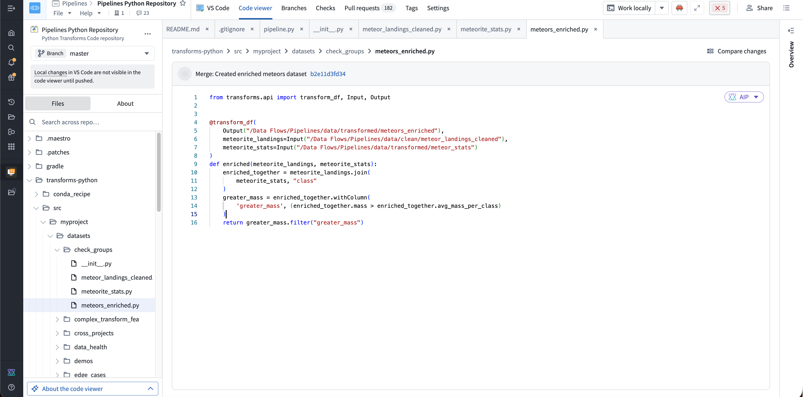
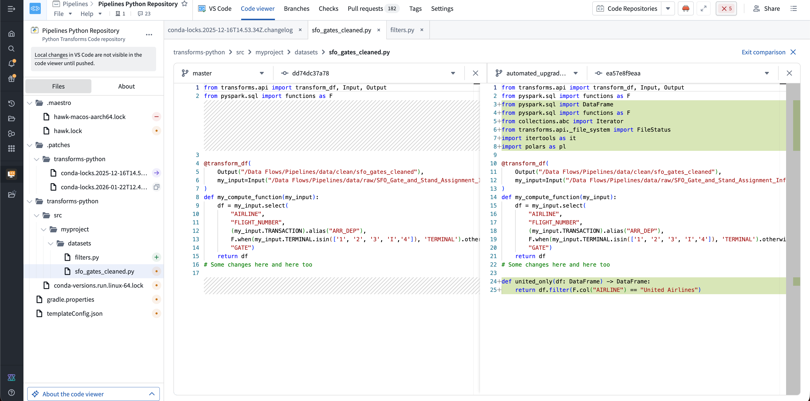
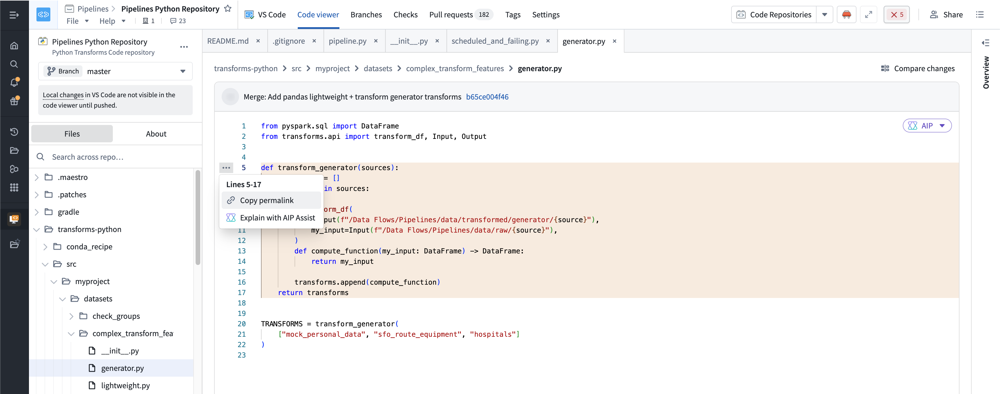

The code viewer is a read-only interface in Code Workspaces for browsing, comparing, and sharing the committed state of a repository. Use it as a consistent reference for code developed in Foundry editors, local development environments, or AI-assisted workflows.
The code viewer shows the committed state stored in the repository. Editor changes appear only after they are committed and synchronized. It is available alongside VS Code, JupyterLab®, and RStudio® Workbench. You can use the code viewer without creating or starting an editor workspace.
To open the code viewer:
Use the code viewer to:

To compare two points in repository history:

Links to branches change as the branch advances. To share a stable reference to an exact commit and line range:

To make changes, select the tab for an editor such as VS Code, Jupyter, or RStudio.
By default, when you open a stopped VS Code workspace, the code viewer opens while its workspace session starts in the background. The VS Code tab icon shows the workspace status. The code viewer remains open when the workspace is ready, so select VS Code to continue editing.
To disable this behavior, select Settings > Preferences, then clear Open code viewer while workspace is loading.